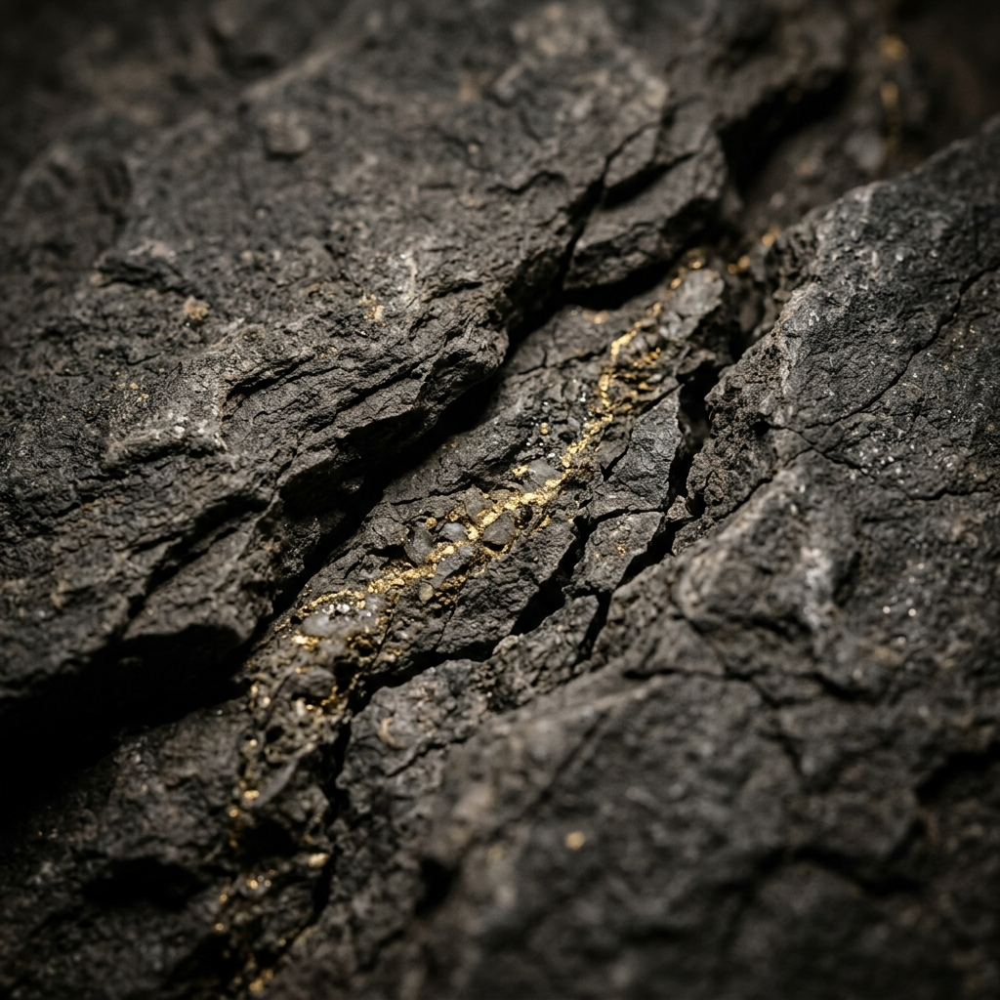

MYST exists to resolve a critical disconnect: the divide between symbolic meaning and material integrity. We source natural gold nuggets gathered in Australia, leaving the unextracted form intact. Every artifact lives alongside the profound intelligence of the earth itself.

This cinematic experience was designed and built by Velocity — the bespoke design studio by Calyvent. It is not the live site. It is what your digital presence could look and feel like.
Commission a Studio Project →